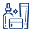
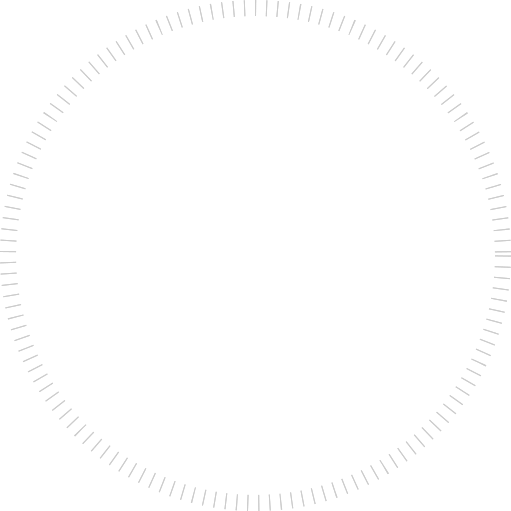

Sapo-Zinc
Care, every day
شامپو ساپوزینک ۲٪
دانش، کیفیت و مراقبت؛ در کنار هم
توسعه محصول با تکیه بر دانش تخصصی
محصولات دارویی، بهداشتی و مکملها


بررسی مواد در آزمایشگاه کنترل شرکت

اطلاعات روشن و قابل پیگیری محصولات
هر محصول، یک تجربه متفاوت
از یک آغاز ساده، تا خانوادهای از محصولات
داستان ساپونین ایران از سال ۱۳۶۸ و تولید صابونهای طبی آغاز شد؛ مسیری که با اضافهشدن شامپوهای طبی و راهاندازی خط تولید مایعات ادامه یافت.
در گام بعد، بخش قرصسازی به این مجموعه افزوده شد و تولید مکملهای رژیمی و غذایی و شکلهای دارویی در برنامه شرکت قرار گرفت.
امروز، ساپونین با استفاده از دانش متخصصان و بررسی مواد اولیه در آزمایشگاه کنترل شرکت، توسعه و تولید محصولات خود را دنبال میکند.


مسیر ارتباط با ساپونین و آشنایی با محصولات
برای پیگیری موجودی محصولات و دریافت اطلاعات همکاری و توزیع، با دفتر شرکت ساپونین ایران در ارتباط باشید.